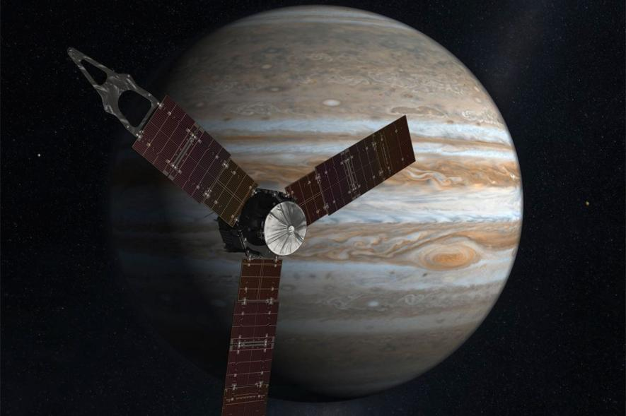

Así se escucha el sonido producido por Gaanímedes, la luna más grande del sistema solar
Ganímedes no es solo la luna mas grande de Júpiter, sino que también la de todo el sistema sola. La sonda Juno de la NASA ha detectado ruidos cuyo origen proviende de Ganímedes.
Juno, una sonda espacial dedicada completamente al planeta Jupiter desde Julio del 2016, realizó con éxito su 38o sobrevuelo cerca del gigante gaseoso. “Los datos y las imágenes de estos sobrevuelos están reescribiendo todo lo que sabemos sobre Júpiter”, dijo Scott Bolton, investigador principal de Juno en el Southwest Research Institute en San Antonio. Los investigadores publicaron un audio de 50 segundos creado cuando Juno pasó volando por Ganímedes durante el verano. El clip del audio de la luna fue creado por ondas de radio eléctricas y magnéticas producidas por el campo magnético del planeta.
El equipo de JunoEl equipo de Juno continúa analizando los datos del sobrevuelo de Ganímedes. En ese momento, Juno estaba a unos 1.038 kilómetros de la superficie de la luna y pasaba rápidamente a 67.000 kilómetros por hora. “Es posible que el cambio en la frecuencia poco después de la aproximación más cercana se deba al paso del lado nocturno al lado diurno de Ganímedes”, sugirió William Kurth, co-investigador principal del instrumento Waves, que tiene su base en la Universidad de Iowa.